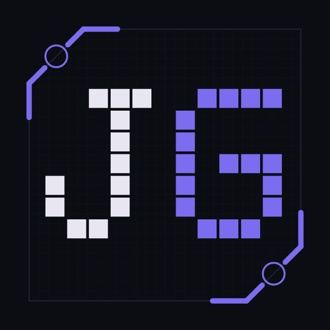
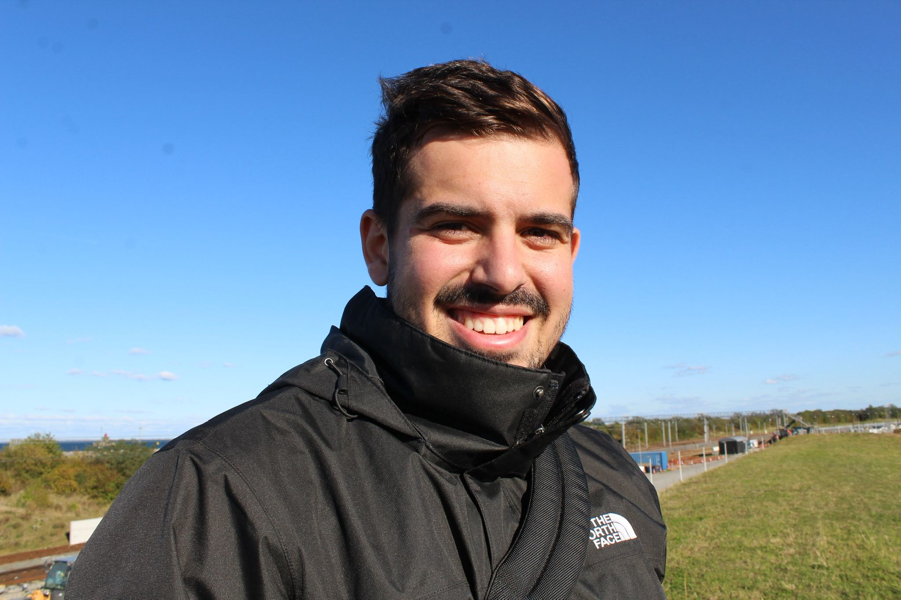

Aerospace Engineer — Aerodinâmica e Propulsão
Uma subida da superfície até ao espaço: o percurso académico e profissional.
Mestre em Eng. Aeroespacial (Aerodinâmica e Propulsão), licenciado em Eng. Eletrónica, IST.
Comecei pelos circuitos e acabei nos escoamentos. Interessa-me sobretudo CFD, aerodinâmica e propulsão — e em particular tecnologia espacial reutilizável e uma engenharia aeroespacial mais sustentável.
Bits, circuitos e noites mal dormidas. Licenciatura em Eng. Eletrónica, IST.
IST, Set 2019 – Jun 2022. Três anos de base em eletrónica que viriam a ser a fundação para tudo o que veio a seguir — do CFD à instrumentação de voo.
Acolhimento de novos alunos. Mentor, NAPE-IST.
Núcleo de Apoio ao Estudante, IST — Set 2020 a Jul 2022. Acompanhamento de novos alunos na adaptação ao primeiro ano, de quem também tinha passado por lá pouco tempo antes.
Workshops STEM para milhares de crianças. Scholarship ROB9-16 & Oeiras Educa.
Nov 2021 – Jan 2025, em parceria com a Câmara Municipal de Oeiras. Workshops de robótica e STEM para milhares de crianças — o primeiro contacto de muitas com engenharia — e desenvolvimento de programas educativos, palestras e projetos com alunos.
Apoio a alunos do 1º ano em pânico pré-exame. Salas de Estudo Online, IST.
Núcleo de Desenvolvimento Académico, IST — Set 2021 a Jan 2022. Apoio direto a alunos do 1º ano em projetos e preparação para exames, sessões remotas fora de horas incluídas.
Aerodinâmica e Propulsão. Mestrado em Eng. Aeroespacial, IST.
IST, Set 2022 – Jun 2025. Especialização em Aerodinâmica e Propulsão — a transição de eletrónica para o espaço, com tese em recuperação de veículos espaciais por rotores.
Telemetria para o carro da Shell Eco-Marathon. Técnico Fuel Cell.
Electrical Engineer, Jul 2022 – Abr 2024. Desenvolvimento do sistema de telemetria do carro a hidrogénio, além de eletrónica e montagem do veículo para a competição Shell Eco-Marathon.
Uma aula de cada vez. Self-Defense Instructor, Krav Maga Global.
Set 2022 – presente. Planeamento e liderança de aulas de defesa pessoal, com adaptação a diferentes níveis de experiência dos alunos.
Um certificado e provavelmente uns hematomas. KMG Civil Instructor.
KMG Civil Instructor Course, Krav Maga Global — 190 horas de formação, 2023.
Entrega da tese — e um alívio dos grandes.
"Computational Investigation of Spacecraft Recovery via Rotary Wings: A Study on Autorotation" — tese de Mestrado em Engenharia Aeroespacial, IST. Simulações computacionais sobre recuperação de veículos espaciais por autorotação.
Próxima paragem: por decidir.
Fim de um percurso de seis anos entre eletrónica e aeroespacial. A seguir: aerodinâmica, propulsão, CFD e tecnologia reutilizável.
Ferramentas, línguas e certificações.
Português nativo; inglês C1 — Advanced Certificate in English (CAE, 2019) e First Certificate in English (FCE, 2018), Cambridge. KMG Civil Instructor (190h, 2023).


Em busca de oportunidades na área aeroespacial — aerodinâmica, CFD, propulsão e tecnologia reutilizável.